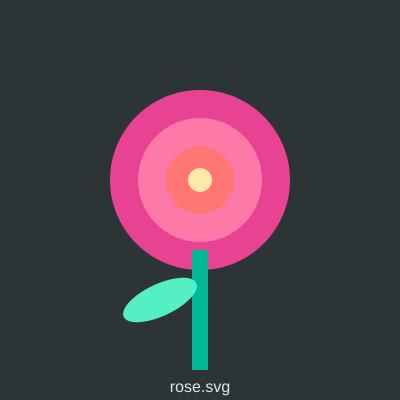

Bộ lọc hình ảnh (filter)
Cùng một ảnh gốc, áp các filter khác nhau. Có thể xếp chồng nhiều hàm (ô cuối).

gốc (không filter)
blur(3px)
brightness(150%)
contrast(180%)
grayscale(100%)
sepia(100%)
hue-rotate(120deg)
invert(100%)
saturate(300%)
drop-shadow()
xếp chồng 3 filter